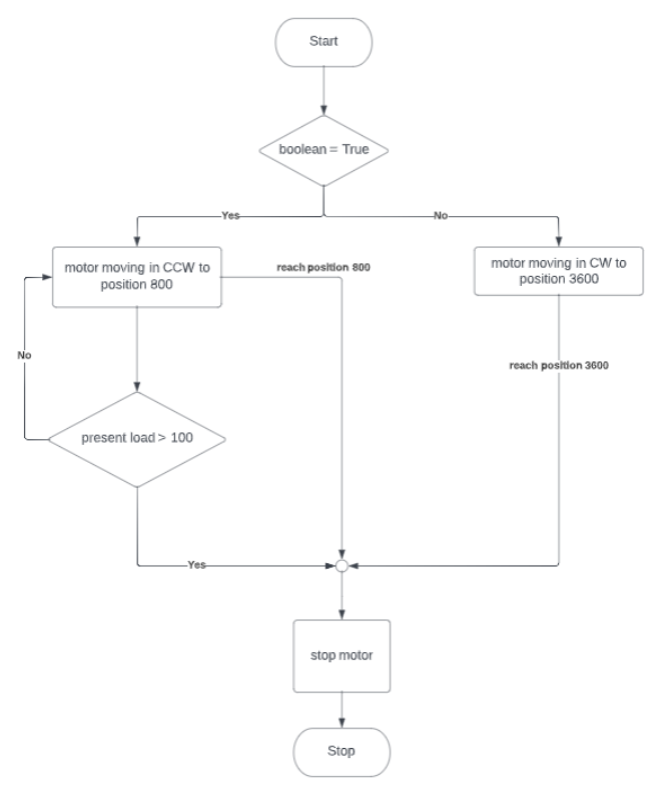

Control Algorithms
Software Setup
To develop grippers, these software tools are needed.
Dynamixel wizard
Dynamixel SDK
Code Overview
For control gripper, Joint Mode is enable because it can control gripper to close and open in range of gripper available position as below picture
Gripper control can interface by boolean input.if boolean value is True, gripper will close. The gripper can detect an object by reading a present load, if present load is more than 100, The gripper will stop. If present load is less than 100, The gripper will stop when DYNAMIXEL-MX64 reach position 800
If a boolean value is False, The gripper will open. It will stop when DYNAMIXEL-MX64 reach position 3600
Code Description
This code is in https://github.com/MBSE-2022-1/Firmware-Team/blob/Manipulator-gripper/python/read_write_for_node.py
# Control table address
ADDR_MX_TORQUE_ENABLE = 24 # Control table address is different in Dynamixel model
ADDR_MX_GOAL_POSITION = 30
ADDR_MX_PRESENT_POSITION = 36
ADDR_MX_CURRENT = 68
ADDR_MX_TORQE_LIMIT = 34
ADDR_MX_PRESENT_SPEED = 38
ADDR_MX_TORQE_CONTROL_ENABLE = 70
ADDR_MX_GOAL_TORQUE = 71
ADDR_MOVING_SPEED = 32
ADDR_MX_PRESENT_LOAD = 40
This control table address is used for DYNAMIXEL-MX64 . more of them can find in https://emanual.robotis.com/docs/en/dxl/mx/mx-64/#control-table-data-address
# Protocol version
PROTOCOL_VERSION = 1.0 # See which protocol version is used in the Dynamixel
We use protocol version 1.0 to control DYNAMIXEL-MX64
# Default setting
DXL_ID = 1 # Dynamixel ID : 1
BAUDRATE = 57600 # Dynamixel default baudrate : 57600
DEVICENAME = '/dev/ttyUSB0' # Check which port is being used on your controller
# ex) Windows: "COM1" Linux: "/dev/ttyUSB0" Mac: "/dev/tty.usbserial-*"
For this part, our dynamixel ID is 1 and we use default baudrate (57600). Device Name id ‘/dev/ttyUSB0’
TORQUE_ENABLE = 1 # Value for enabling the torque
TORQUE_DISABLE = 0 # Value for disabling the torque
DXL_MINIMUM_POSITION_VALUE = 800 # Dynamixel will rotate between this value
DXL_MAXIMUM_POSITION_VALUE = 2900 # and this value (note that the Dynamixel would not move when the position value is out of movable range. Check e-manual about the range of the Dynamixel you use.)
DXL_MOVING_STATUS_THRESHOLD = 5 # Dynamixel moving status threshold
DXL_CW = 800
DXL_CCW = 3600
DXL_TORQE_STOP = 0
DXL_ = 20
DXL_LIMIT = 200
stack = 0 #count gripper force when start
# Initialize PortHandler instance
# Set the port path
# Get methods and members of PortHandlerLinux or PortHandlerWindows
portHandler = PortHandler(DEVICENAME)
# Initialize PacketHandler instance
# Set the protocol version
# Get methods and members of Protocol1PacketHandler or Protocol2PacketHandler
packetHandler = PacketHandler(PROTOCOL_VERSION)
This part is for initialize PortHandler and PackHandler.
def get_taget_callback(boolean):
dxl_present_load, dxl_comm_result, dxl_error = packetHandler.read2ByteTxRx(portHandler, DXL_ID, ADDR_MX_PRESENT_LOAD)
dxl_present_position, dxl_comm_result, dxl_error = packetHandler.read2ByteTxRx(portHandler, DXL_ID, ADDR_MX_PRESENT_POSITION)
#print("Position%03f" % (dxl_present_position))
if boolean == True:
dxl_comm_result, dxl_error = packetHandler.write4ByteTxRx(portHandler, DXL_ID, ADDR_MX_GOAL_POSITION, DXL_CW)
if dxl_present_load > 100 and stack == 1:
dxl_comm_result, dxl_error = packetHandler.write1ByteTxRx(portHandler, DXL_ID, ADDR_MX_TORQUE_ENABLE, TORQUE_DISABLE)
dxl_comm_result, dxl_error = packetHandler.write1ByteTxRx(portHandler, DXL_ID, ADDR_MX_TORQUE_ENABLE, TORQUE_ENABLE)
stack = 0
#print("break in loop")
return True
elif dxl_present_load < 80 and stack == 0:
stack = 1
if not (abs(DXL_CW - dxl_present_position) > DXL_MOVING_STATUS_THRESHOLD):
#print("break from goal")
stack = 0
return True
elif boolean == False:
dxl_comm_result, dxl_error = packetHandler.write4ByteTxRx(portHandler, DXL_ID, ADDR_MX_GOAL_POSITION, DXL_CCW)
if not (abs(DXL_CCW - dxl_present_position) > DXL_MOVING_STATUS_THRESHOLD):
return False
def get_present_data():
dxl_present_speed, dxl_comm_result, dxl_error = packetHandler.read2ByteTxRx(portHandler, DXL_ID, ADDR_MX_PRESENT_SPEED)
rpm = dxl_present_speed*0.114
dxl_present_current, dxl_comm_result, dxl_error = packetHandler.read2ByteTxRx(portHandler, DXL_ID, ADDR_MX_CURRENT)
amp = 4.5*((dxl_present_current)-2048)
return rpm,amp
This function used for read present speed and present current
def main_set():
# Open port
try:
portHandler.openPort()
print("Succeeded to open the port")
except:
print("Failed to open the port")
print("Press any key to terminate...")
getch()
quit()
# Set port baudrate
try:
portHandler.setBaudRate(BAUDRATE)
print("Succeeded to change the baudrate")
except:
print("Failed to change the baudrate")
print("Press any key to terminate...")
getch()
quit()
# Enable Dynamixel function
dxl_comm_result, dxl_error = packetHandler.write1ByteTxRx(portHandler, DXL_ID, ADDR_MX_TORQUE_ENABLE, TORQUE_ENABLE)
if dxl_comm_result != COMM_SUCCESS:
print("%s" % packetHandler.getTxRxResult(dxl_comm_result))
print("Press any key to terminate...")
getch()
quit()
elif dxl_error != 0:
print("%s" % packetHandler.getRxPacketError(dxl_error))
print("Press any key to terminate...")
getch()
quit()
else:
print("DYNAMIXEL has been successfully connected")
dxl_limit_result, dxl_error = packetHandler.write2ByteTxRx(portHandler, DXL_ID, ADDR_MX_TORQE_LIMIT, DXL_LIMIT)
if dxl_limit_result != COMM_SUCCESS:
print("%s" % packetHandler.getTxRxResult(dxl_comm_result))
elif dxl_error != 0:
print("%s" % packetHandler.getRxPacketError(dxl_error))
else:
print("limit torqe complete")
In the Main_set function, a controller opens the port to do serial communication with the Dynamixel and then the controller sets the communication buadrate at the port opened previously. Then it will enable Dynamixel torque and limit torque.